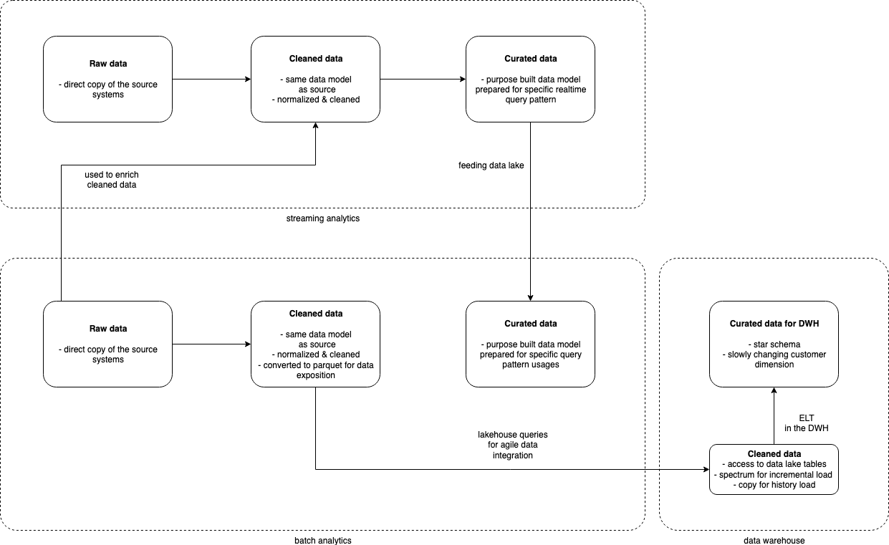

Data Lake
Data Lake storage¶
The data lake storage is a central component to the overall analytics platform. A data lake is the single source of truth for all data consumers, it's important to integrate all the modules (Batch Analytics, Streaming Analytics and Data Warehouse) to it. For example, the Streaming module reads Raw layer data to enrich its stream of events with static referential data but also writes back curated data to the data lake after the processing for cold analytics from the data lake.
The data lake storage is implemented with Amazon S3, a durable, scalable and cost-effective object storage that is fully integrated with analytics tools.
The following storage architecture explain how the data lake storage is designed.

The data lake is organized in multiple Amazon S3 Buckets representing different versions of the data:
- The raw layer contains the data coming from the data sources in the raw format without any transformation. In this layer, the schema is very loose to allow the ingestion of new formats minimizing the errors to avoid missing data.
- The cleaned layer contains the data from raw that has been cleaned and parsed to a consumable schema. The data model isn't modified, it contains the exact same entities and relations as in the raw data. It is the first layer that can be consumed by business users. The schemas and data types are more restrictive but still support schema evolution if it's required.
- The curated layer contains refactored data based on business requirements. The data can be duplicated in different models and schemas based on the query patterns. A good example is the Data Warehouse which may require the data in a specific multi-dimensional model. With lake house design, the Data Warehouse could directly access the data lake curated layer.
There are actually 3 different S3 buckets, one for each layer, but it can be extended to multiple buckets in multiple accounts in the future.
Data Lake governance¶
The data lake catalog is another central component to the overall analytics platform. A single source of truth requires a catalog to share schemas and technical information like statistics and partitions. It ensures all the data producers and consumers are using the same metadata.
The metadata catalog is implemented with AWS Glue Data Catalog, a serverless catalog services that allows to register, find and access data in multiple data stores.
All the data lake datasets metadata are maintained in AWS Glue Data Catalog. Similarly to the data lake storage, the catalog is organized in the same three different layers (raw, cleaned, curated) via three AWS Glue Databases.